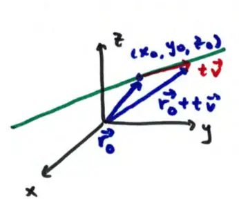

14.1 Vector-Valued Functions
Scalar-valued functions: \(f(t) = t^2 + 3\)
Vector-valued functions: \(\vec{r}(t) = \langle \cos t, \sin t, 0 \rangle\)
You have seen an example already: equation of line \(\vec{r}(t) = \vec{r}_0 + t\vec{v}\)

Quick example: line through \(P(1, 2, 3)\) and \(Q(4, 5, 6)\)